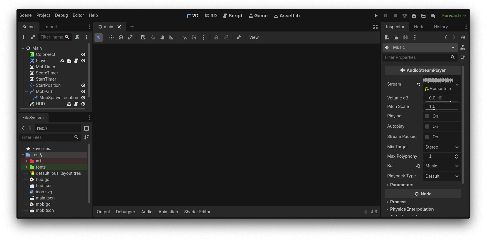

Лівий блок сайту

Godot це ігровий рушій з відкритим кодом. Цей рушій є дуже прости у використанні що дозволяє легко його опанувати і розробляти відеоігри самостійно. Я теж хотів опанувати цей рушій, але моя проблема полягає в тому що через те що в унівреситиеті задають занадто багато домашок, у мене зовсім немає часу на те щоб ще й навчатися розробляти відеоігри. А також через те щ у ене в університеті немає дисципліни на тему розробки відеоігор, у мене немає достатньо мотивації аби займатися самостійним начанням. Я дуже хочу навчатися, але не можу змусити себе це зробити.
Повернутись на головну
Правий блок сайту